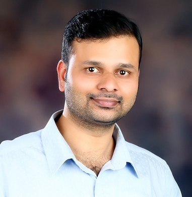
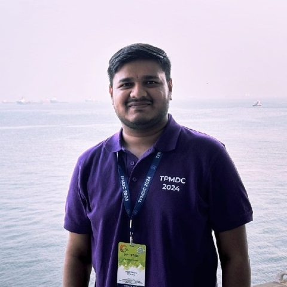
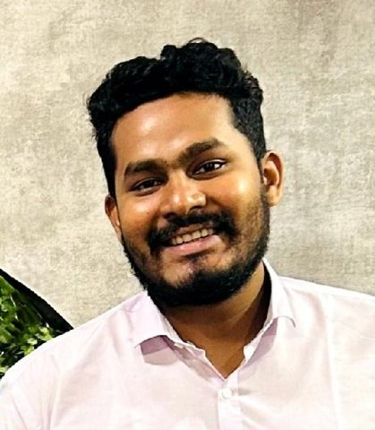
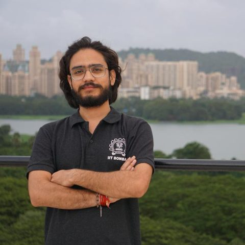
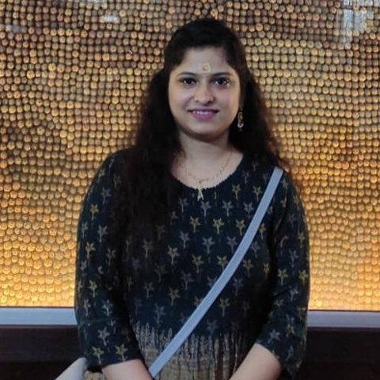
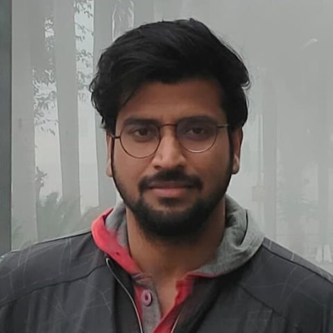
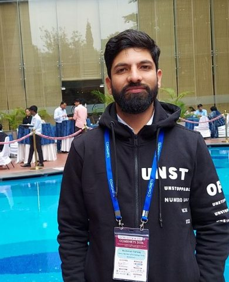
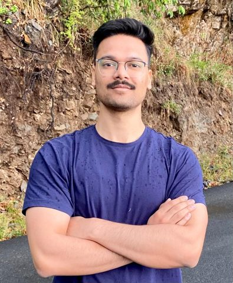
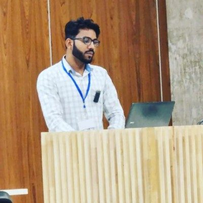

Sangram Krishna Nirmale
Assistant Professor, Department of Civil Engineering, IIT Bombay
Associate Faculty, IIT Bombay–FedEx ALFA
I build models of how people travel through cities: who makes which trips, when, and by which mode. My group uses them to forecast travel demand and public transport ridership, and to improve accessibility and road safety, working with agencies and industry.

An activity-based model in miniature. Each dot is a synthetic resident following a full-day plan: leaving home, travelling to work, school or a market, and returning. Their mode choice depends on distance and access to the metro.
Highlighted resident's day: At home.
About
Dr. Sangram Krishna Nirmale is an Assistant Professor in the Department of Civil Engineering at the Indian Institute of Technology Bombay, and an Associate Faculty member of the IIT Bombay–FedEx Centre for Advanced Logistics and Focused Analytics (ALFA). Before joining IIT Bombay, he was a Research Scientist at the Centre for Infrastructure, Sustainable Transportation and Urban Planning (CiSTUP), Indian Institute of Science, Bengaluru.
His research develops econometric and statistical models of how people travel. His research group focuses on activity-based travel demand models, public transport ridership forecasting, accessibility and road safety, with ongoing work on freight and logistics. His PhD, on modelling driver behaviour in heterogeneous, lane-less traffic, gave him a grounding in discrete-continuous choice methods that now carries into our safety research.
If your work overlaps with mine and want to collaborate, write to me.
Experience
- Feb 2024 – present
Assistant Professor
Department of Civil Engineering, IIT Bombay, Mumbai
- Jan 2025 – present
Associate Faculty
IIT Bombay–FedEx Centre for Advanced Logistics and Focused Analytics (ALFA)
- Aug 2022 – Jan 2024
Research Scientist
Centre for Infrastructure, Sustainable Transportation and Urban Planning (CiSTUP), IISc Bengaluru
Education
- 2016 – 2022
Ph.D., Transportation Engineering
Department of Civil Engineering, Indian Institute of Science, Bengaluru
- 2014 – 2016
M.Tech., Urban Planning
Department of Architecture and Planning, Visvesvaraya National Institute of Technology, Nagpur
- 2010 – 2014
B.E., Civil Engineering
Government College of Engineering, Karad
Research
Six connected themes, from individual travel decisions to city-wide planning.
Activity-based travel demand modelling
Models that simulate each resident's full day of activities and trips, built on synthetic populations, so cities can forecast demand and test policies before building.
Public transport ridership forecasting
Direct demand and activity-based forecasts of bus and metro ridership, and how service reliability, such as headway variability, changes how many people ride.
Accessibility
How easily people reach jobs and services, and first- and last-mile access for pedestrians and cyclists around transit stations.
Road safety and traffic behaviour
Behaviour models of drivers in heterogeneous, lane-less traffic, including perception errors and anticipation of several vehicles ahead, applied to understanding risk.
Travel behaviour and choice modelling
Econometric models of how people choose modes, destinations and schedules, including socio-psychological influences, using discrete-continuous and latent class frameworks.
Freight and logistics
Freight movement and logistics analytics, in collaboration with the IIT Bombay–FedEx ALFA centre.
Work with us
Sponsored research and training for agencies and industry.
The models we publish are built to be used. We take on sponsored research through IIT Bombay for transport departments, transit operators, planning consultancies and companies that need rigorous, data-driven answers.
Travel demand forecasting
Activity-based and trip-based demand models for cities, corridors and new projects.
Public transport ridership forecasting
Station- and route-level ridership forecasts for bus and metro, and the effect of service changes.
Accessibility analysis
Access to jobs and services, and first- and last-mile connectivity around transit stations.
Road safety analysis
Behaviour-based analysis of risk in mixed traffic to inform safety measures.
Have a transport problem that needs data and models?
Let's discuss
Funded research projects
- 2025 - present
Smart Return Management: A Data-Driven Approach for Reducing E-Commerce Return Costs
- 2025 - present
Advancing behavioural realism in activity-based travel demand models through socio-psychological influences and perception error modelling
- 2024 – present
A context-sensitive accessibility evaluation model for first- and last-mile connectivity for pedestrians and cyclists around transit stations in Mumbai
Publications
Citations and the latest list are on Google Scholar.
Journal articles
- Malik N. F., Nirmale, S. K., Koushik A., and Pinjari, A. R. (2026). Modelling multimodal mode choice behaviour considering spatial variability in level of service attributes. Transportation Research Part A: Policy and Practice , 204. doi:10.1016/j.tra.2025.104710
- Hasan, N., Nirmale, S. K., L. Deepa, and Pinjari, A. R. (2025). Modelling metro rail ridership at the station-and route-level: an application to analysis of metro ridership in Bengaluru, India. Transportation Research Part A: Policy and Practice, 200. doi:10.1016/j.tra.2025.104638
- Sharma, A., Pinjari, A. R., Nirmale, S. K., and Sundaresan, R. (2024). A human factors-based modeling framework to mimic bus driver behavior. Transportation Research Part C: Emerging Technologies, 170. doi:10.1016/j.trc.2024.104929
- Malik, N. F., Saxena, S., Pinjari, A. R., Gopalakrishnan, R., and Nirmale, S. K. (2024). An analysis of mode choice decisions for long-distance recreational travel in India. Transportation in Developing Economies, 10, 1–20. doi:10.1007/s40890-024-00206-0
- Nirmale, S. K., Pinjari, A. R., and Chakroborty, P. (2023). A two-dimensional, multi-vehicle anticipation, and multi-stimuli based latent class framework to model driver behaviour in heterogeneous, disorderly traffic conditions. Transportation Research Part C: Emerging Technologies, 160. doi:10.1016/j.trc.2023.104458
- Deepa, L., Pinjari, A. R., Nirmale, S. K., Biswas, M., and Srinivasan, K. K. (2023). The adverse impact of headway variability on bus transit ridership: Evidence from Bengaluru, India. Transport Policy, 141, 343–356. doi:10.1016/j.tranpol.2023.07.026
- Nirmale, S. K., Sharma, A., and Pinjari, A. R. (2023). Multi-vehicle anticipation-based driver behavior models: A synthesis of existing research and future research directions. Transportation Letters. doi:10.1080/19427867.2023.2231212
- Nirmale, S. K., and Pinjari, A. R. (2023). Discrete choice models with multiplicative stochasticity in choice environment variables: Application to accommodating perception errors in driver behaviour models. Transportation Research Part B: Methodological. doi:10.1016/j.trb.2023.02.014
- Nirmale, S. K., Pinjari, A. R., and Sharma, A. (2022). A panel data-based discrete-continuous modelling framework to analyse longitudinal driver behaviour in homogeneous and heterogeneous disordered traffic conditions. Transportation Letters, 1–14. doi:10.1080/19427867.2022.2132058
- Deepa, L., Pinjari, A. R., Nirmale, S. K., Srinivasan, K. K., and Rambha, T. (2022). A direct demand model for bus transit ridership in Bengaluru, India. Transportation Research Part A: Policy and Practice, 163, 126–147. doi:10.1016/j.tra.2022.07.004
- Nirmale, S. K., Pinjari, A. R., and Sharma, A. (2021). A discrete-continuous multi-vehicle anticipation model of driving behaviour in heterogeneous disordered traffic conditions. Transportation Research Part C: Emerging Technologies, 128. doi:10.1016/j.trc.2021.103144
Under review
- Passenger-Oriented or Freight-Oriented? Demand-Side Evidence for Rural Integrated Passenger–Freight Transport
Conference papers, full length
- Hasan, N., Nirmale, S. K., and Pinjari, A. R. (2025). A direct demand model for metro transit ridership in Bengaluru, India. 104th Transportation Research Board (TRB) Annual Meeting, Washington, D.C., USA, January 2025.
- Feroz, M. N., Nirmale, S. K., and Pinjari, A. R. (2023). Modelling mode choice behaviour with spatial variability in level of service attributes. 7th Conference of Transportation Research Group of India (CTRG-2023).
- Nirmale, S. K., Pinjari, A. R., and Chakroborty, P. (2023). A two-dimensional, multi-vehicle anticipation, and multi-stimuli based latent class framework to model driver behaviour in heterogeneous disorderly traffic conditions. 102nd TRB Annual Meeting, Washington, D.C., USA, January 2023. Also presented at the 14th TPMDC, IIT Bombay, December 2022.
- Sharma, A., Pinjari, A. R., Sundaresan, R., and Nirmale, S. K. (2023). A human factors based modelling framework to mimic bus driver behaviour. 102nd TRB Annual Meeting, Washington, D.C., USA, January 2023.
- Nirmale, S. K., Pinjari, A. R., and Sharma, A. (2022). Modelling homogeneous and heterogeneous disordered traffic conditions using a discrete-continuous multi-vehicle anticipation based driving behaviour model. 101st TRB Annual Meeting, Washington, D.C., USA, January 2022.
- Deepa, L., Pinjari, A. R., Nirmale, S. K., Biswas, M., and Srinivasan, K. K. (2022). The adverse impact of headway variability on bus transit ridership: Evidence from Bengaluru, India. 14th Transportation Planning and Implementation Methodologies for Developing Countries (TPMDC), IIT Bombay, December 2022.
- Nirmale, S. K., and Pinjari, A. R. (2020). Discrete-continuous choice framework to model driver behaviour in heterogeneous traffic conditions. 12th International Conference on Communication Systems and Networks (COMSNETS), Bengaluru, January 2020.
- Nirmale, S. K., and Pinjari, A. R. (2020). Driver behaviour models with perception errors: A choice modelling framework with stochastic variables. 99th TRB Annual Meeting, Washington, D.C., USA, January 2020.
- Nirmale, S. K., Pinjari, A. R., and Munigety, C. R. (2019). A copula-based joint multinomial discrete-continuous choice framework to model driver behaviour in mixed traffic conditions. 15th World Conference on Transport Research (WCTR), IIT Bombay, Mumbai, May 2019.
- Nirmale, S. K., and Ghuge, V. V. (2016). Developing a Public Transport Accessibility Model (PTAM) to assess workplace accessibility in Kolhapur city, Maharashtra, India. 12th TPMDC, IIT Bombay, December 2016.
- Nirmale, S. K., and Ghuge, V. V. (2015). Introducing mechanism for improving transport infrastructure in Kolhapur city for achieving smart and sustainable development. National Conference on Sustainable Built Environment, IIT Roorkee, April 2015.
Conference papers, extended abstracts
- Nirmale, S. K., Pinjari, A. R., and Sharma, A. (2022). On the capability of random utility maximisation theory-based driver behaviour models of heterogeneous disordered traffic to reproduce the fundamental macroscopic properties of traffic flow. Traffic and Granular Flow (TGF), IIT Delhi, October 2022.
- Sharma, A., Pinjari, A. R., Sundaresan, R., and Nirmale, S. K. (2022). A human factors based modelling framework to mimic bus driver behaviour. Traffic and Granular Flow (TGF), IIT Delhi, October 2022.
- Nirmale, S. K., and Pinjari, A. R. (2019). Multi-stimuli driver behaviour models with perception errors: An integrated latent variable and discrete-continuous framework with empirical applications to heterogeneous and homogeneous traffic conditions. 6th International Choice Modelling Conference, Kobe, Japan, August 2019.
- Nirmale, S. K., and Pinjari, A. R. (2018). Influence zone, multi-stimuli, and two-dimensional (IZMS-2D) driving behaviour in heterogeneous traffic conditions: An econometric framework and exploratory analysis of driving behaviours in India. 15th International Conference on Travel Behaviour Research (IATBR), Santa Barbara, California, USA, July 2018.
Teaching
Courses at IIT Bombay.
Postgraduate
CE 780Behavioural Travel Modelling
Spring 2025, Spring 2026CE 699Transportation Systems Studio
Spring 2025, Spring 2026
Undergraduate
CE 235Artificial Intelligence & Data Science
Autumn 2025, Autumn 2026CE 465Numerical Methods in Civil Engineering
Autumn 2024, Spring 2025, Autumn 2025CE 341Transportation Engineering Laboratory
Autumn 2024
Awards and honours
- 2025
Prime Minister Early Career Research Grant, Anusandhan National Research Foundation (ANRF)
- 2024
Young Faculty Award, IIT Bombay
- 2023
Best Thesis Award in traffic engineering, Transportation Research Group of India (TRG India)
- 2022
Best Presentation Award, Sustainable Transport Planning, Policies and Emerging Technologies track, 14th TPMDC, for “The adverse impact of headway variability on bus transit ridership: Evidence from Bengaluru, India” (presenter)
- 2022
Best Paper Award, 14th TPMDC, for the same paper (co-author)
- 2021
Best Paper Award, Planning and Demand Modelling track, 6th CTRG, for “A direct demand model of bus transit ridership considering spatial disaggregation, demand-supply endogeneity, non-linear service response, accessibility measures, and inter-route relationships” (co-author)
- 2021
COMSNETS Fellowship, International Conference on Communication Systems and Networks
- 2019
Best Paper Award, Traffic Flow Analysis and Facilities Design track, 5th CTRG, for “Driver behaviour models with perception errors: A choice modelling framework with stochastic variables” (lead author)
- 2019
First rank in the examination of the AICTE-sponsored short-term training programme “Modelling and Control of Traffic under Mixed Conditions”, IIT Madras, 2–7 December 2019
Team
We are looking for motivated PhD students, postdocs and interns. See openings.
PhD students
-

Meet Tabiyar
PhD student, 2024 – present
Research: Transit demand modelling
M.Tech., Urban Planning, SVNIT Surat
B.Tech., Civil Engineering, SVNIT Surat
-

Biplab Sekhar Swain
PhD student, 2024 – present
Research: Activity-based travel demand modelling
M.Tech., Transportation Engineering, NIT Warangal
B.Tech., Civil Engineering, VSSUT Burla
-

Aayush Kumar Verma
PhD student, 2024 – present
Research: Driver behaviour analysis and modelling
Co-advised with Prof. Nagendra R. Velaga
M.Tech., Transportation Engineering, IIT Kharagpur
B.Tech., Civil Engineering, Graphic Era University, Dehradun
-

Aishwarya Ranjeet Shete
PhD student, 2025 – present
Research: Population synthesis for activity-based travel demand models
M.Tech., Transportation Engineering, NIT Warangal
B.E., Civil Engineering, Prof. Ram Meghe College of Engineering, Amravati
-

Deepanshu Soni
PhD student, 2025 – present
Research: Freight movement optimisation
Co-advised with Prof. Tom V. Mathew
M.Tech., Infrastructure Systems, IIT Roorkee
B.Tech., Civil Engineering, SKIT Jaipur
Postdoctoral fellow
-

Dr. Mustansir Farooq
Institute Postdoctoral Fellow, 2026 – present
Research: Airline itinerary choice, travel demand modelling and forecasting, discrete choice and econometric analysis
PhD, IIT Delhi
M.Tech., Transportation Engineering and Management, J.C. Bose University of Science and Technology, YMCA, Faridabad
B.E., Civil Engineering, University of Kashmir
Project staff
-

Satvik Chandra
Project staff, 2025 – present
Research: Software development
MCA, Graphic Era University, Dehradun
BCA, Graphic Era University, Dehradun
-

Dr. Awdhesh Kumar Bind
Project staff, 2026 – present
Research: Multi-objective optimisation, fuzzy and uncertain systems, transportation and logistics modelling, sustainable supply chains
PhD, Dr. B. R. Ambedkar NIT Jalandhar
M.Sc., Mathematics, University of Lucknow
B.Sc. (Hons.), Mathematics, University of Delhi
Former members
- Dr. Abdul AhadResearch Project Associate, August 2025 – August 2026. Now Assistant Professor, Assistant Professor at National Institute of Technology (NIT) Srinagar LinkedIn
- Dr. Suchismita NayakInstitute Postdoctoral Fellow, Oct 2024 – May 2025. Now Assistant Professor, School of Planning and Architecture, Bhopal. LinkedIn
- Aditya VermaM.Tech. student, 2024 – Jul 2025, co-advised with Prof. Tom V. Mathew. Now Energy Markets Analyst (Power), ICF. LinkedIn
- Gautam KumarProject Assistant (Python developer), Jan 2025 – Jul 2025. LinkedIn
Outreach and service
Courses, invited talks and professional service.
Courses and workshops organised
Applied Econometric Methods for Empirical Transportation Research: Travel Behavior, Risk Analysis, and Policy Applications
A three-day Continuing Education Programme (CEP) short course was organised at the Department of Civil Engineering, IIT Bombay, from 17- 19 August 2026.
Smart Technologies, IoT, and Artificial Intelligence for Smart Infrastructure and Operations
One-Day Workshop jointly organised with TU Wien, organised at the Department of Civil Engineering, IIT Bombay, on 6 July 2026
Transportation Systems and Demand Modelling: Theory and Practice
A three-day Continuing Education Programme (CEP) short course was organised at the Department of Civil Engineering, IIT Bombay, from 09- 11 July 2025.
Workshop on OpenPaths AGENT
Session by Gaurav Vyas, Product Manager, Bentley Systems. IIT Bombay, 5 February 2025.
International Workshop on Advancing Travel Demand Models Using Emerging Data Sources
Sponsored by the Institution of Eminence (IoE), IIT Bombay. 18 November 2024.
Invited talks and lectures
-
Invited as a guest lecturer in the Faculty Development Programme on “Travel Behaviour Modeling and Simulation,” at School of Planning (SPA) Bhopal on 1st October 2026.
Delivered lecture on Introduction to Travel Behaviour & Travel Demand Modelling.
-
Exploring the critical data needs for travel demand modelling in AI-enhanced transportation planning
National Workshop on Integrating Artificial Intelligence and FinTech Solutions in Transportation and Healthcare, NIT Mizoram, Aizawl. September 2024.
Advanced Choice Modelling Methods with Applications in Transportation and Urban Systems
Short course, Centre for Continuing Education, IISc Bengaluru, August 2024. Lectures on choice modelling and tutorials on model estimation in GAUSS.
Summer School Open Stack: Recent Advances in Urban Transportation Systems and Planning
GISE Hub, IIT Bombay, July 2024. Lectures on mode choice and activity-based travel demand models; tutorials in R and QGIS on road networks and traffic analysis zones.
The crucial role of travel demand modelling in city planning
Faculty Development Programme on Contemporary Civil Engineering, D Y Patil College of Engineering and Technology, Kolhapur, June 2024.
SERB High-End Workshop on Inferential Statistics and Regression Techniques for Data Analytics
VNIT Nagpur, December 2022. Lecture on choice modelling theory and tutorials in R.
SPARC Workshop on Advanced Choice Modelling Methods in an Evolving Urban Travel Behaviour Landscape
IISc Bengaluru, February 2020. Course material, theory lectures and GAUSS tutorials.
Discrete Choice Theory and Modelling Applications in Transportation
IISc Bengaluru, July 2018. Tutorials on model estimation in R.
Professional service
Head, Scientific Committee, 15th International Conference on Transportation Planning and Implementation Methodologies for Developing Countries (TPMDC)
Reviewer for Transportation Research Part B: Methodological, Transport Policy, Transportation Research Record, Transportation Letters and Transportation in Developing Economies
Contact
Office phone
Office
Room 035, Ground Floor
Department of Civil Engineering
Indian Institute of Technology Bombay
Powai, Mumbai 400076, India